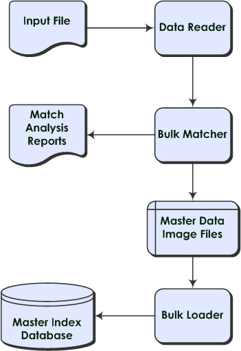

Initial Bulk Match and Load Overview
The Initial Bulk Match and Load Tool (IBML Tool) gives you the ability to analyze match logic, match legacy data, and load a large volume of data into a master index application. One of the issues that arises during a data management deployment is how to get a large volume of legacy data into the master index database quickly and with little downtime, while at the same time cleansing the data, reducing data duplication, and reducing errors. The IBML Tool provides a scalable solution that standardizes and matches raw data and that can be run on multiple processors for better performance.
The IBML Tool consists of two components, the Bulk Matcher and the Bulk Loader. The Bulk Matcher compares records in the input data using probabilistic matching algorithms based on the Master Index Match Engine and based on the configuration you defined for your master index application. It then creates an image of the cleansed and matched data to be loaded into the master index. The Bulk Loader uses the output of the Bulk Matcher to load data directly into the master index database. Because the Bulk Matcher performs all of the match and potential duplicate processing and generates EUIDs for each unique record, the data is ready to be loaded with no additional processing from the master index application itself.
The following topics provides additional information about the Initial Bulk Match and Load Tool.
Initial Bulk Match and Load Process Overview
Performing an initial load of data into a master index database consists of three primary steps. The first step is optional and consists of running the Bulk Matcher in report mode on a representative subset of the data you need to load. This provides you with valuable information about the duplicate and match threshold settings for the master index application. Analyzing the data in this way is an iterative process. Based on the information from each run, you can modify the Bulk Matcher configuration file by changing the blocker query used for matching, the match string, and the duplicate and match thresholds. After you reconfigure the Bulk Matcher, rerun the analysis reports to verify the results. You can repeat this procedure as often as needed until you are satisfied with the match process settings. Once the configuration is finalized, make sure to modify the master index application configuration files to match the Bulk Matcher configuration file.
The second step in the process is running the Bulk Matcher in matching mode. The Bulk Matcher processes the data according to the query, matching, and threshold rules defined in the Bulk Matcher configuration file. This step compares and matches records in the input data in order to reduce data duplication and to link records that are possible matches of one another. The output of this step is a master image of the data to be loaded into the master index database. The final step in the process is loading the data into the master index database. This can be done using either Oracle SQL*Loader or the Data Integrator Bulk Loader. Both products can read the output of the Bulk Matcher and load the image into the database.
Figure 1 Initial Bulk Match and Load Tool Process Flow
Data Cleansing, Matching, and Loading Procedure Overview
The IBML Tool was designed to build on the features provided by the Data Cleanser and Data Profiler tools that are also generated from a master index application. These tools help you analyze the quality of your data and fix any data integrity issues prior to matching the data using the Bulk Matcher. The Data Cleanser generates a file from your legacy data that can be read by the Bulk Matcher. Together, the Data Profiler, Data Cleanser, and IBML Tools provide a complete solution for analyzing, cleansing, matching, and finally loading your legacy data into a master index database, no matter the quality of the original data set.
The following steps outline the procedure to follow to prepare, match, and load legacy data.
Make sure the master index application is configured and generated and the database is created.
Extract the data to either a Data Integrator staging database or a flat file.
Begin queuing any transactions that occur from the time you extract the data until the database is loaded and ready to go live.
Run the Data Profiler and Data Cleanser against the extracted data. This applies cleansing rules to the data and produces a file that can be read by the Bulk Matcher. This step is optional. See Analyzing and Cleansing Data for Master Index Studio.
Extract a representative sampling of the data.
Configure the Initial Bulk Match and Load Tool properties.
Using the Bulk Matcher, perform a match analysis against the sampling, analyze the reports, and modify the match configuration if necessary. This is an iterative process for fine-tuning the matching logic to suit your data.
Perform match processing against the data. The result of this step is a set of files containing cleansed and linked data that can be loaded directly into the database.
Load the data into the database using the SQL*Loader Bulk Loader or the Data Integrator Bulk Loader.
Open the queue to allow transactions into the master index application.
Distributed Processing
You can use multiple processors when running the IBML Tool to process data concurrently and improve performance. This is useful when processing very large data sets because the matching process can be very time and resource intensive depending on the size of the data to be processed. The number of processors required to optimize the matching process depends on the number of records you are processing and the configuration of the blocking query. If the criteria blocks defined for the query are not very selective and result in a large number of matching records, the number of records processed for each block will be larger and the number of processors should be increased. Using less selective query blocks can improve the accuracy of your matching results because it casts a wider net when retrieving possible matches to a record. Using multiple processors can help offset the cost. For smaller data sets, you can run the process on one high performance processor. In a distributed environment, one processor, known as the master IBML Tool, controls the entire process. This computer should be a very high performance machine. The remaining machines simply carry out the processes as directed by the master IBML Tool. There is no limit to the number of processors you can use. The master IBML Tool needs to be located on an FTP server in order to connect to each of the remaining IBML Tools, which use FTP to retrieve the files that they process.
About the Bulk Match Process
The Bulk Matcher performs the following sequence of tasks:
Block distribution and EUID assignment are both handled by the master Bulk Matcher. Matching and master index image generation are performed by all matchers. At any given time, all matchers perform the same task. When that task is complete for all matchers, they move on to the next task, obtaining the necessary files and information from the master Bulk Matcher. The cluster synchronizer (see About the Cluster Synchronizer) determines when a task is complete and coordinates the tasks for all matchers.
Block Distribution
The master Bulk Matcher reads the input file and then writes records to block bucket files to be distributed to each matcher. Before writing the data, the block distributor reads the configuration of the query, match string, and duplicate and match thresholds. It then reads in the input data and writes the data to the block files based on the defined blocking query. The number of files created is dependent on the total number records, record size, and the memory of the processor. Once the data files are created for all blocks, the cluster synchronizer indicates that the matchers can begin the match process.
Matching Records
Once the input data is distributed into individual block buckets, each matcher retrieves a bucket and proceeds to compare each record to every other record in a block and assign a weight that indicates the probability that the records match. The matching logic used here is identical to the matching logic used by the master index application. Any matches that are found during this process are written to a file. Once a matcher completes matching on a block bucket, the cluster synchronizer copies the match file to the master matcher's working directory.
EUID Assignment
When all blocks are matched, the master Bulk Matcher merges the match files from all the other matchers into one master match file. The master Bulk Matcher then assigns an EUID to the system records, assigning any records that are linked as matches the same EUID. Once system records are assigned an EUID, they are distributed to EUID files. Any system records with the same EUID are stored in the same file. Once EUID assignment is complete, the cluster synchronizer indicates that the next phase, generating the master data images, can begin.
Master Index Image Creation
The master index image generator reads from the EUID bucket files to create the master data image files to be loaded into the master index database. These images include complete enterprise records with SBRs, system records, and child objects. The SBR is determined based on the survivor calculator defined for the master index application. The image files also include assumed matches, potential duplicates, and transaction information. Each matcher processes one of the EUID buckets at a time until all buckets are processed. Once the Bulk Matcher completes this phase, match processing is complete.
About the Bulk Load Process
After the matching process is complete, you can load the data using either a SQL*Loader bulk loader or the Data Integrator Bulk Loader. Both are generated from the loader files created for the master index application. Like the Bulk Matcher, the Bulk Loader can be run on concurrent processors, each processing a different master data image file.
You can use the Data Integrator Bulk Loader to load data for either an Oracle or a SQL Server database. The SQL*Loader bulk loader can only be used for an Oracle database. With SQL*Loader, you need to drop the unique constraints and indexes using the SQL script provided before loading data, and then reinstate the constraints and indexes after loading the data.
About the Cluster Synchronizer
The cluster synchronizer coordinates the activities of all IBML processors The cluster synchronizer database, installed within the master index database, stores activity information, such as bucket file names and the state of each phase. Each IBML Tool invokes the cluster synchronizer when they need to retrieve files, before they begin an activity, and after they complete an activity. The cluster synchronizer assigns the following states to a bucket as it is processed: new, assigned, and done. The master IBML Tool is also assigned states during processing based on which of the above phases is in process.
Required Format for Flat Data Files
The default data reader for the IBML Tool is designed to read data in the format provided by the Data Cleanser. This format is based on the object definition defined for the master index application along with certain requirements for the IBML Tool. You can also extract your data to a flat file using the extractor of your choice.
If you use a data extractor other than Data Integrator, the data needs to be placed in a flat file a format the IBML Tool can read. If your data is in a different format, you can define a custom data reader to read the flat file. The IBML Tool can read a flat file in the following format without any additional configuration:
GID|SystemCode|LocalID|UpdateDate|UserID|ObjectFields
where:
GID is a unique global ID. This is automatically generated for files created by the Data Cleanser. If you are not using the Data Cleanser, you can generate unique numbers to fill these fields.
SystemCode is the processing code for the system from which the record originated.
LocalID is the object's local ID in the given system.
UpdateDate is the most recent update date for the record. This field can be empty.
UserID is the login ID of the user who last updated the record. This field can be empty.
ObjectFields includes the objects and fields that are defined in object.xml. Be sure to include every field defined in the object structure in the order they are defined (include standardized, phonetic, and parsed fields even if they are empty). Child object types are delimited by a pound sign (#) and multiple child objects of one type are delimited by a dollar sign ($).
Below is an example of a valid input record based on the standard master index Person template, which includes alias, address, and phone objects.
28|ORACLE|00160419|11/14/1999 08:41:10|GSMYTHE|P|ELIZABETH|ELIZABETH|E421|ANN|WARREN |WARREN|WARAN||MRS|554-44-55555|08/18/1977|Y|F|M|W|13|BAP|ENG|STEVE|ANN|MARCH|GEORGE |CAHILL|SHEFFIELD|CT|USA|E|Y||C4411444|CA|07/21/2018||ENG|USA#$BETH||CAHILL$LIZ|ANN |CAHILL#$H|1519 SHORELINE DR.|1519||SHORELINE|SARALAN|Dr|Unit 5|SHEFFIELD|CT|09876 |1075|CAPE BURR|USA#$CH|9895557848|$CB|9895551500|19